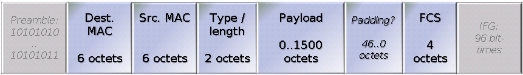

Networking
Scapy Worksheet
Craft Ethernet frames using "scapy" in Python
In this worksheet you will set up the "scapy" package, which provides Python tools. Then you'll use it to "craft" (create by hand) and send Ethernet frames.
This provides the ability to create LAN frames with specific characteristics, such as
Prepare for trying scapy
- Start your Windows VM.
-
Find the MAC address for your Windows VM by doing these steps:
- Start a command prompt on your Windows VM.
-
Run the command
ipconfig/all. -
Find the line that looks like "Physical Address . . . . : 08-00-27-58-78-29".
The last part will be different, and is your Windows MAC address.
Windows shows MAC addresses as six hexadecimal numbers, separated by dashes (-). However, most software writes MAC addresses with colons (:) instead of dashes.
Remember the MAC address, you'll need it in a moment. -
Find the line that looks like "IPv4 Address . . . . : 10.0.2.4".
The last number may be different, and is your Windows IP address.
Remember the IP address, you'll also need it.
-
From your Linux terminal, run the command
sudo wireshark.- Select the "eth0" interface.
- Click on "Start".
Use scapy to craft and send some frames
-
From your Linux terminal, run the command
sudo python. Then enter this command at the python prompt:- from scapy.all import *
(note: You can combine these steps by using the command
sudo scapy, and also get color coding. Either way will work.) -
From your Linux terminal, run Python in "scapy mode" by entering this command:
sudo scapy. It will prompt you for Python commands by showing the prompt ">>>". -
You will target your Windows VM, using its MAC address that you found earlier.
Remember to use colons (:) instead of dashes (-), for example "08:00:27:58:78:29".
Enter your Windows VM's MAC address, but using colons (:), with this command at the python prompt:
- winMAC = '08:00:27:58:78:29' # replace with your Windows VM's MAC address
Then enter these commands at the python prompts, one at a time:
- lltdType = 0x88d9
- frame1 = Ether(dst=winMAC, type=lltdType)
-
frame1.show() # inspect your newly created frame
- sendp(frame1, iface='eth0')
-
Look at your Wireshark display (in the Linux VM).
Put in a display filter:
eth.type==0x88d9
(This is the Ethernet type for Microsoft's LLTD protocol.) You should see an Ethernet frame, identified as carrying protocol 0x88d9. -
Examine the Ethernet headers, and the overall frame length.
How long is this frame? How does that compare to the length of the Ethernet headers?
Is there any payload?
Is this a legal Ethernet frame?
-
Enter these commands at the python prompts, one at a time:
- bcMAC = 'ff:ff:ff:ff:ff:ff' # MAC broadcast address
- shortType = 32
-
frame2 = Ether(dst=winMAC, src=bcMAC, type=shortType)
- sendp(frame2, iface='eth0')
-
Look at your Wireshark display (in the Linux VM).
You should see another Ethernet frame, this one identified as having a length of 32.
What kind of Ethernet is this?
Expand the Length field (click the arrowhead on the left). Is this a legal length for an Ethernet frame?
What is the source MAC address of the frame? Is this a reasonable source address?
-
Enter these commands at the python prompts:
- spoofed = '00:00:01:00:00:01' # spoofed MAC address
- arpType = 0x0806 # ARP-type payload
-
eth = Ether(dst=bcMAC, src=spoofed, type=arpType)
- vectorIP = '10.0.2.4' # replace with your Windows VM's IP address
- victimIP = '10.0.2.254' # spoofed victim's IP address
- payload = ARP(op=0x0001, psrc=victimIP, pdst=vectorIP)
- frame3 = eth/payload
- pad = Padding()
- pad.load = '\x00' * (60 - len(frame3))
- fullframe = frame3/pad
- fullframe.show() # inspect your new frame
-
Stop the Wireshark capture.
Replace the display filter with a simple one:
arp.Restart the Wireshark capture.
-
Enter this command at the python prompt:
- sendp(fullframe, iface='eth0')
-
Look at your Wireshark display (in the Linux VM).
You should see an ARP "who-has" packet.
How long is this frame?
Where does this frame appear to come from? What MAC address, what IP address?
Did you see a reply (an ARP "is-at" frame)? Who was it sent to?
-
Enter these commands at the python prompts:
- linuxMAC = '08:00:27:23:9a:2f' # replace w/ Linux VM's MAC address
- ipType = 0x0800 # IP-type payload
- eth = Ether(dst=winMAC, src=linuxMAC, type=ipType)
- srcIP = '10.0.2.3' # replace w/ Linux VM's IP address
- ip = IP(dst=vectorIP, src=srcIP, proto='icmp')
- icmp = ICMP(type='echo-request', code=0)
- frame4 = eth/ip/icmp
- pad = Padding()
- pad.load = '\x00 Secret! \x00'
- pad.load += '\x00' * (60 - len(frame4) - len(pad.load))
- fullframe = frame4/pad
-
Stop the Wireshark capture.
Replace the display filter with a simple one:
icmp.Restart the Wireshark capture.
-
Enter this command at the python prompt:
- sendp(fullframe, iface='eth0')
-
Look at your Wireshark display (in the Linux VM).
You should see a pair of ping (ICMP) packets.
What protocols are present in the frame you sent? How do they compare to the protocols in the reply?
-
Can you find your Secret! message?
Can Wireshark identify the message in its middle Analysis pane? Is the message visible in the lower hexdump pane?
-
Close down python/scapy by entering
exit(). Also close the Wireshark window.